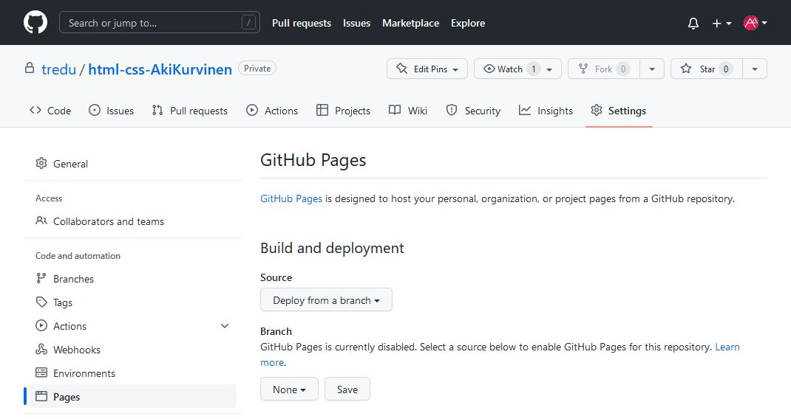
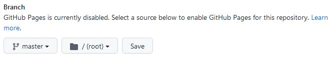
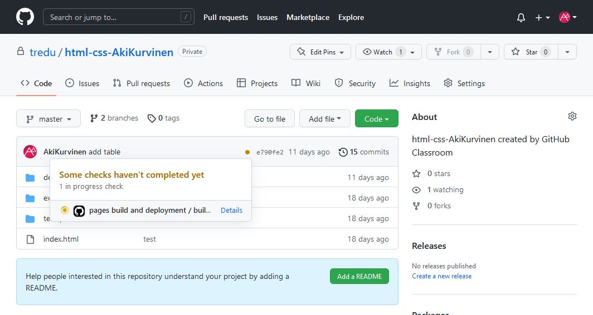
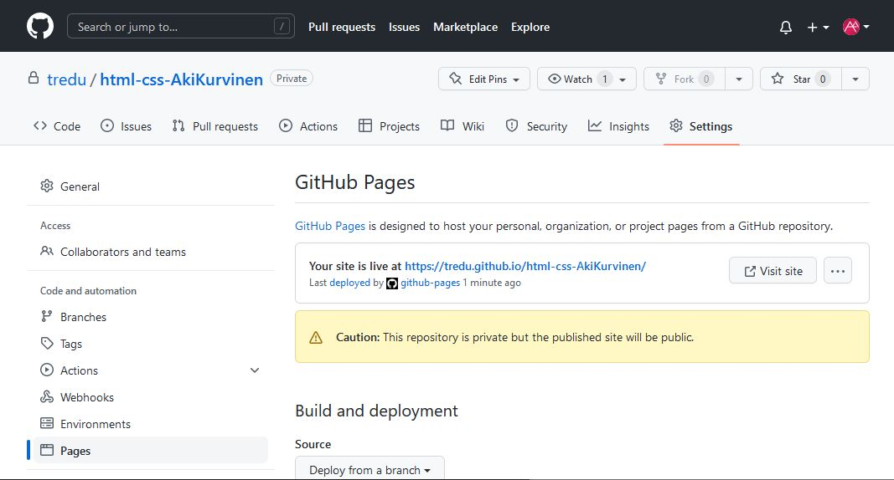
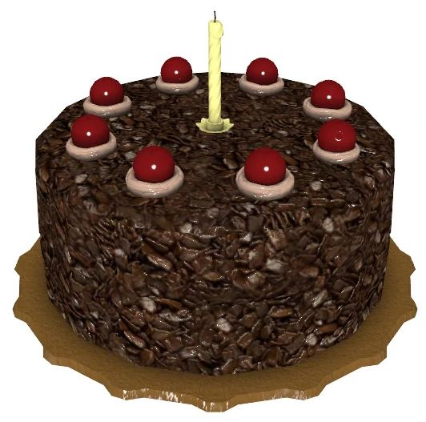

Demo 5 - Kalatori: julkaisu
GitHub repon julkaisu
⚠ Seuraavassa vaiheessa koko GitHub repositoryn sisältö asetetaan julkiseksi internetissä.
- Repository voi edellään olla ”Private”- moodissa,
mutta sen sisältämät tiedostot ovat silti löydettävissä,
jos käyttäjä tietää niihin linkin.
- Muista siis siivota reposta pois kaikki, mitä et halua julkaista.
- Keskustele tarvittaessa huoltajaltasi kanssa, siitä mitä on soveliasta julkaista nettiin.
- GitHub Pagesin avulla käyttäjät voivat selata html -tiedostoja nettisivun tapaan.
- Tässä vaiheessa hyöty tiedoston nimeämisestä index.html konkretisoituu.
Julkaise sivu github.io:ssa
- Mene GitHubiin ja valitse oma html-css repository
- Paina Settings

- Valitse Pages ja ja vaihda None-kohtaan master
- Paina Save

- Nyt repon pääsivulla pitäisi näkyä oranssi pallukka, jota klikkaamalla saat auki GitHub Actions kuvauksen

- Tässä näkymässä oleva "Some checks haven't completed yet" ei päivity välttämättä koskaan, vaikka julkaisu olisi jo valmis.
- Päivitä välilehti tai paina Details, niin voit seurata repon julkaisun edistymistä.
- Kun julkaisu on valmis, mene takaisin asetuksiin Settings > Pages

- Jos sivuston julkaisu onnistui, saat linkin julkiselle sivullesi Your site is live at https://tredu.github.io/html-css...
- Jos GitHub reposi juuressa ei ole index.html tai README.md tiedosta niin näet tyhjän sivun linkkiä painamalla
- Mene kalatorin osoitteeseen lisäämällä URL-osoitteeseen kalatori-projektin kansiopolku esim.
https://tredu.github.io/html-css-OmaNimi/demos/d5_kalatori/
- Jos kansiossa d5_kalatori on koko projektin koostava tiedosto index.html, niin sivuston pitäisi nyt näkyä käyttäjälle
- Jos tiedoston nimi ei ole index.html niin URL-osoitteen perään voi kirjoittaa erikseen esim. etusivu.html
- Tämä ei kuitenkaan ole käytettävyyden kannalta hyvä ratkaisu, joten vaihda kasatun kalatori tiedoston nimeksi index.html
- Saitko GitHub repositoryn näkymään internetissä?
- Jos sait, niin onnittelut onnistuneesta julkaisusta!
Enää jäljellä paperitöitä…
- Päivitä README.md vastaamaan projektin nykyistä tilannetta
- Lisää dokumentaation taulukkoon linkki julkaistulle sivulle
- The End -
